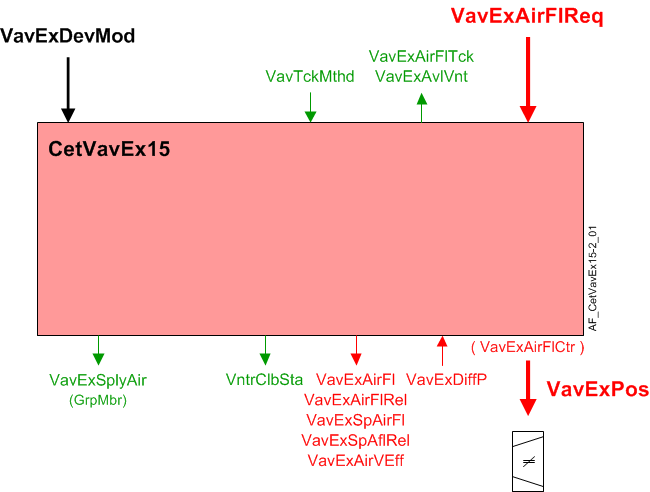

CET 抽取空气 VAV 箱、压力传感器、管道区域、文丘里阀 (CetVavEx15)
Overview
应用功能》CET room pressurization extract air VAV box 15, differential pressure sensor, duct area, internal air flow controller, venturi valve" (CetVavEx15）操作文丘里空气阀，使用闭环和开环控制将测量流量驱动至气流设定点（VavExSpAirFl），它根据接收到的信号计算得出，该信号指示对房间提取流量的需求。当与正确的外围设备结合使用时，它可以控制气流，稳定时间为 1 至 2 秒。还可以将其设置为较慢的操作。
主输出是文丘里空气阀位置的调节输出（VavExPos）由该 AF 中的 PID 气流控制器生成。包括支持空气平衡和文丘里空气阀校准的功能。
Note
为了计算抽气体积流量，该 AF 使用duct areacalculation和输入来自differential pressure sensor.
主要特点：
- VAV extract damper modulation for non critical room pressurization
- Extract air volume flow setpoint calculation
- Extract air volume flow calculation
- Airflow coefficient calculation (air balancing logic)
Function
下图显示了与此应用程序函数关联的 BACnet 对象。主要信号流程总结如下：
Basic function:接受抽取气流需求信号（VavExVntReq）从相关的房间增压控制器并将其映射到抽气流量设定点（VavExSpAirFl）。在将结果作为命令输出到对象之前，将结果传递给设备模式逻辑开关（VavExPos）控制设备。

| 命令或请求（或相关） |
| 条件或状态或可用性的通知 |
| 设备模式 |


Device mode:设备模式的输入信号是多状态值。
VavExDevMod支持以下状态：
- Off
- Control mode
- Max.air vol.flow
- Min.air vol.flow
- Smoke ctrl.air flow setp.
Available status:当 VAV 排气风门可用于排气通风时，指示可用性的二进制输出信号（VavExVntReq）将为“是”（可用）。
要使可用状态为“是”，设备模式必须等于“控制模式”（调制）。
Airflow control loop (cascade control)
Airflow controller:PID 气流控制器（VavSuAirFlCtr) 将文丘里阀的气流量与当前 VAV 抽气气流设定值进行比较，并进行调节VavSuPos必要时将箱流量保持在设定值。
ABT 5.x and later:
Airflow setpoint selection:AF 计算终端的气流设定值，以满足支持的气流驱动程序之一的需求：
- Heating
- Cooling
- Ventilation
- Make-up
和输入来自3/min, m3/h，l/s）。需求水平与流量范围的映射如图所示。
表示需求水平的对象，（VavSuAirFlReq）和主动驱动器（VavSuAflScale) 是 AF 的输入。它们是由其他函数编写的。终端的气流限制在此处配置。
|
|
冷却 | 加热 |
|
|
通风 | 化妆品 |


该设定点映射是正常操作。当设备模式（VavSuDevMod）为控制模式时适用。设备模式的特殊值会更改设定点，如下所示：
- Off – Setpoint is 0 and damper is closed
- Control Mode – Setpoint follows % demand
- Maximum airflow setpoint – Setpoint is maximum for the currently active airflow scale
- Minimum airflow setpoint – Setpoint is minimum for the currently active airflow scale
- Manual airflow setpoint – Setpoint is value configured for smoke control
Supply Air Flow Limits for Air Terminals - Configuration
送风流具有多种功能：加热、冷却、通风和加压。以下部分介绍如何针对不同的用例配置每个电源端子。
Cooling | Heating | Ventilation | |
Single CV (Constant Volume) Supply Terminal | Min = Max = 0（或盘管冷却房间所需的最小流量值） | Min = Max = 0（或盘管加热房间所需的最小流量值） | 最小值 = 0 |
Single VAV (Variable Air Volume) Supply Terminal (no fume hood) | Min = 0（或盘管冷却房间所需的最小流量值） | Min = 0（或盘管加热房间所需的最小流量值） | 最小值 = 0 |
Single VAV Supply Terminal (fume hood) | Min = 0（或盘管冷却房间所需的最小流量值） | Min = 0（或盘管加热房间所需的最小流量值） | 最小通风 = 0 |
检查项目规范，看看各个终端的排序是否彼此不同：它们是否响应不同的需求。如果没有指定差异，请遵循下表的说明。如果每个终端的流量限制设置相同，则它们以相同的流量运行。
Cooling | Heating | Ventilation | |
Multiple Supply Terminals (same size, same function) | Min = 0（或盘管冷却房间所需的最小流量值） | Min = 0（或盘管加热房间所需的最小流量值） | 最小值 = 0 |
检查项目规范，看看各个终端的排序是否彼此不同：它们是否响应不同的需求。如果电源端子尺寸不同但功能相同，请遵循下表的说明。
Cooling | Heating | Ventilation | |
Multiple Supply Terminals (different sizes, same function) | Min = 0（或盘管冷却房间所需的最小流量值） | Min = 0（或盘管加热房间所需的最小流量值） | 最小值 = 0 |
对于具有不同功能的多个供气终端的情况，下表提供了如何配置一个为冷梁提供服务的 CV（恒定风量）终端和一个不带冷却的 VAV（可变风量）终端的示例。
通过 CV 终端的流量不会因加热或冷却而变化。
流量始终通过通风或盘管支持（最小热量或最小冷却）来设置，除非减少流量是维持房间加压的唯一方法。
通过 VAV 终端的流量可能因加热、冷却和通风而异，或为了平衡通风柜流量。
Cooling | Heating | Ventilation | |
Multiple Supply Terminals (different functions) | Min = Max = 0（或盘管冷却房间所需的最小流量值） | Min = Max = 0（或盘管加热房间所需的最小流量值） | 最小值 = 最大值 = 0（或支持加热或冷却盘管所需的值） |
Multiple Supply Terminals (different function) | Min = 0（或盘管冷却房间所需的最小流量值） | Min = 0（或盘管加热房间所需的最小流量值） | 最小值 = 0 |
ABT 4.x and earlier
Airflow setpoint selection:AF 计算终端的气流设定值，以满足支持的气流驱动程序之一的需求：
- Heating
- Cooling
- Ventilation
- Make-up
和输入来自3/min, m3/h，l/s）。需求水平与流量范围的映射如图所示。
|
|
冷却 | 加热 |
|
|
通风 | 化妆品 |


表示需求水平的对象，（VavSuAirFlReq）和主动驱动器（VavSuAflScale) 是 AF 的输入。它们是由其他函数编写的。终端的气流限制在此处配置。
该设定点映射是正常操作。当设备模式（VavSuDevMod）为控制模式时适用。设备模式的特殊值会更改设定点，如下所示：
- Off – Setpoint is 0 and damper is closed
- Control Mode – Setpoint follows % demand
- Maximum airflow setpoint – Setpoint is maximum for the currently active airflow scale
- Minimum airflow setpoint – Setpoint is minimum for the currently active airflow scale
- Manual airflow setpoint – Setpoint is value configured for smoke control
Airflow control with Venturi air valve:AF 具有三种使用文丘里阀控制气流的方法：PID 控制、线性特性曲线以及线性特性曲线与 PID 控制相结合。用户通过设置配置属性（AirFlCtlMod）并通过建立表征曲线的数据表。
AirFlCtlMod | 特性曲线 | 设定值 | Control action |
|---|---|---|---|
闭环 | 配置好的 | > AirVMinCtlClb | 加热__VAR_000__ 线圈阀位置用于加热。 |
闭环 | 配置好的 | < AirVMinCltClb | 仅曲线 |
闭环 | 未配置 | 任何 | PID only |
闭环 | 配置好的 | 任何 | 仅曲线 |
闭环 | 未配置 | 任何 | 失败模式 |
开环 | 配置好的 | > AirVMinCtlClb | 仅曲线 |
开环 | 配置好的 | < AirVMinCltClb | 仅曲线 |
开环 | 未配置 | > AirVMinCtlClb | 仅曲线（执行器的输出为零） |
开环 | 未配置 | < AirVMinCltClb | 仅曲线（执行器的输出为零） |
开环 | 配置好的 | 任何 | 仅曲线 |
开环 | 未配置 | 任何 | 失败模式 |
-- | 校准 | -- | 曲线 |
PID control: 当选择闭环配置且尚未配置特性表时，将使用 PID 控制。
PID 控制器固定在调制模式。如果需要，可以通过提供 2 位设定点信号来实现两位操作。
Linear characterization curve:开环控制，当选择开环控制时，将使用 15 点线性特性曲线来定位文丘里管。
如果用户选择闭环控制并且气流设定点等于小于最小控制速度的速度设定点（AirVMinCtlClb）。默认设置为 1.778 m/s (350 fpm)。
线性特征曲线的 x 和 y 点可以手动输入，也可以通过运行文丘里校准自动输入。
Linear characterization curve with PID:当选择配置的闭环控制并配置特性曲线且气流设定点、风道速度高于控制的最小速度时，应用组合控制。
当设定值快速变化并且两个计算路径都响应时，系统可能会出现超调。为了减少这种趋势，发送到 PID 控制器的设定点信号被延迟，以便与开环执行器运动引起的气流变化同步到达。为了最有效的操作，用户应该调整延迟（TiConSpAflRel) 对应于执行器的行程时间。
Flow sensor failure: 如果气流传感器对象无效（不包括超范围），则流量控制风门位置将根据配置扩展的设置进行设置AirFlFailMod.
- If AirFlFailMod is set to Hold, the damper will stay in the current position.
- If AirFlFailMod is set to Open, the damper position will be set to 100%.
- If AirFlFailMod is set to Close, the damper position will be set to 0%.
当传感器发生故障时，PID 操作将暂停。当传感器状态再次有效时，PID 恢复运行。
当 AI 不可靠时，气流计算会继续，但气流值可能不会改变，因为 AI 的值停止更新。 AF 还设置一个二进制值对象，指示气流数据的正常或故障状态。
Network communication loss: 如果发生网络通信丢失，流量设定值将根据配置扩展的设置进行设置AirFlFailMod.
- If AirFlFailMod is set to Hold, the flow setpoint will stay in the current position.
- If AirFlFailMod is set to Open, the flow setpoint will be set to the maximum flow of the mode the terminal was in during failure.
- If AirFlFailMod is set to Close, the flow setpoint will be set to the minimum flow of the mode the terminal was in during failure.
当网络通信丢失时，流量控制回路继续以上面选择的设定值运行。
Flow sensor failure with characterization curve:如果控制器检测到流量传感器故障（不包括超出范围），它将切换到仅通过特性曲线进行控制。
Sensor calibration:当气流传感器处于主动校准状态时，主动流量控制暂停；输出不会改变，积分器也不会递增。这适用于闭环控制。当状态恢复正常时，由于比例作用，输出可能会出现波动。
开环控制（具有特性曲线）继续运行，并可能在校准期间移动执行器。
Airflow sensing: AF 根据测量的压差值计算体积气流，并支持与气流传感器相关的其他功能。它支持与空气平衡相关的手动操作，并与 APS 和其他压力传感器配合使用，包括自动归零功能。 AF 不包括将传感器归零的计算或数据。
当管道中的速度较低时（低于AirVMinCtlClb）控制器使用特性曲线中的值而不是流量测量来命令气流对象。
Low sensor value: 配置设置指定开启点和以压力为单位的滞后值。
在文丘里应用中，此功能不起作用，因为传感器的切断速度远低于控制器切换到校准曲线时的值。
如果代表 DP 传感器的 AI 对象指示故障并且配置了特性曲线，控制器将切换到文丘里空气阀以获取流量数据。代表气流的计算值对象显示特性曲线中的值，并且该对象的可靠性并不表明存在问题。从流量值导出的其他值也表明数据可靠。
Duct area calculation:管道面积是根据配置数据计算的。
Airflow coefficient:气流系数为配置数据（VavSuFlCoef）。用户可以直接输入系数或输入自己的独立气流读数，并让 AF 计算和设置流量系数。
Air balancing:平衡功能与气压功能无关。空气平衡功能是：
- Set flow setpoint according to selected balancing mode.
- Calculate duct area
- Calculate flow coefficient.
- Apply airflow coefficient.
- Restore automatic operation.
- Record data for balancing report.
平衡功能与房间增压功能无关。当平衡器执行平衡步骤时，预计房间可能会失去压力。
Supply chain interface: 有两个供应链输出信号。
Airflow deviation signal:送风气流偏差（VavExAirFlDvn) 信号（以百分比表示）用于空气处理机组的风扇速度（静压）重置策略。它是通过测量送风管道的气流并将其与气流设定值进行比较而获得的。
VavExAirFlDvn = VavExSpAflRel减VavExAirFlRel
VavExAirFlDvn如果条件无效，则等于 0。
Saturation signal:饱和信号VavExAflStrtn是一个二进制对象，当气流控制回路在超过内置时间延迟的时间内无法获得足够的空气来达到设定点时，该对象为 True（“饥饿”）。延迟结束后，开环操作开始。
Note
VavExAflStrtn如果参数始终关闭EnStrtnCal= 0（否）。这允许用户从饱和压力重置系统中排除特定终端。
In order for Saturation Signal to be True:
1. 启用饱和度校准参数必须设置为是 (EnStrtnCal=Yes)
2. VAV控制器的输出必须大于饱和电平(VavExAirFlCtr>StrtnLvl)
3. 气流误差，即设定值减去气流值，必须大于气流误差限值 (AirFlEr>AirFlErLm)
仅当在 DlyOnStrtn 持续时间内满足所有三个部分时，饱和信号才能为 True。
在此应用程序功能中输入最小和最大气流设定值。段中的组成员对象将值传输到房间应用程序。
Configuration
 Objects
Objects
描述 | 目的 | 类型 | 默认值 |
|---|---|---|---|
Extract air VAV balancing state 1:Initial | VavExBalSta | MCnfVal | 1:Initial |
Extract air VAV balancing mode 1:Maximum ventilation | VavExBalMod | MCnfVal | 1:Maximum ventilation |
Extract air VAV air volume flow at hood | VavExAirFlHood | ACnfVal | 100 [m3/h] |
Extract air VAV recorded balancing mode 枚举见VavExBalMod | VavExBalModRec | MCnfVal | 1:Maximum ventilation |
Extract air VAV recorded air volume flow at hood | VavExAflHodRec | ACnfVal | 0 [m3/h] |
Extract air VAV recorded flow coefficient | VavExFlCoefRec | ACnfVal | 0.000 |
Extract air VAV initial flow coefficient | VavExFlCoefIni | ACnfVal | 0.000 |
Extract air VAV recorded air volume flow | VavExAirFlRec | ACnfVal | 0 [m3/h] |
Extract air VAV recorded position | VavExPosRec | ACnfVal | 0 [%] |
Extract air VAV duct area 0...1 [m2], 0.0...10.76 [英尺2] | VavExDuctArea | ACnfVal | 0.050 [m2] |
Extract air VAV duct shape 1:Rectangular | VavExDuctShape | MCnfVal | 2:Round |
Extract air VAV dimension A 0...100 [厘米], 0.0...39.4 [英寸] | VavExDmsnA | ACnfVal | 20.0 [cm] |
Extract air VAV dimension B 0...100 [厘米], 0.0...39.4 [英寸] | VavExDmsnB | ACnfVal | 20.0 [cm] |
Extract air VAV flow coefficient 0...2 | VavExFlCoef | ACnfVal | 0.780 |
Extract air VAV smoke control air volume flow setpoint | VavExSpAflSmk | ACnfVal | 50 [m3/h] |
Extract air VAV maximum air volume flow for ventilation | VavExAflMaxVnt | ACnfVal | 100 [m3/h] |
Extract air VAV minimum air volume flow for ventilation | VavExAflMinVnt | ACnfVal | 0 [m3/h] |
 Parameters
Parameters
描述 | 范围 | 默认值 |
|---|---|---|
Failure mode for air volume flow sensor 1:Hold extract air ▶还定义了网络通信丢失时终端如何响应。 | AirFlFailMod | 1:Hold extract air |
Switch-on point for differential pressure | SwiOnPtDiffP | 0.2 [Pa] |
Hysteresis for differential pressure | HysDiffP | 0.1 [Pa] |
Time constant for air volume flow | TiConAirFl | 0 [s] |
Switch delay for tracking method to air volume flow | SwiDlyTckMthd | 60 [s] |
Switch tolerance for tracking method to air volume flow | SwiTolTckMthd | 5.0 [%] |
Nominal air volume flow | AirFlNom | 0 [m3/h] |
Control mode for air volume flow 0:Open-loop control | AirFlCtlMod | 1:Closed-loop control |
Minimum air velocity for control and venturi calibration | AirVMinCtlClb | 1.778 [m/s] |
Time constant for relative air volume flow setpoint | TiConSpAflRel | 2 [s] |
Enable deviation calculation 0:No | EnDvnCal | 1:Yes |
Enable saturation calculation 0:No | EnStrtnCal | 1:Yes |
Saturation level | StrtnLvl | 90 [%] |
Air volume flow error limit | AirFlErLm | 0 [%] |
Switch-on delay saturation | DlyOnStrtn | 60 [s] |
Switch-on point for air flow demand | SwiOnAirFlDmd | 4 [%] |
Hysteresis for air flow demand | HysAirFlDmd | 2 [%] |
Pressure unit | PUnit | [Pa] |
Air volume flow unit | AirFlUnit | [m3/h] |
Air velocity unit | AirVUnit | [m/s] |
Interface
界面 | 描述 | 类型 | 参考号 | 拥有者 |
|---|---|---|---|---|
VavExPos | Extract air VAV position | AO | ◉ | Room segment / Field device |
VavExDiffP | Extract air VAV differential pressure | AI | ◉ | Room segment / Field device |
VavExAirVEff | Extract air VAV effective air velocity | ACalcVal | ● | - |
VavExSpAirFl | Extract air VAV setpoint for air volume flow | APrcVal | ● | - |
TrndVavExSpAfl | Trend for extract air VAV setpoint for air volume flow | FtrSel | ● | - |
VavExSpAflRel | Extract air VAV setpoint for relative air volume flow | ACalcVal | ● | - |
VavExAirFl | Extract air VAV air volume flow | ACalcVal | ● | - |
TrndVavExAirFl | Trend for extract air VAV air volume flow | FtrSel | ● | - |
VavExAirFlRel | Extract air VAV relative air volume flow | ACalcVal | ● | - |
VavExAirFlDvn | Extract air VAV air volume flow deviation | ACalcVal | ● | - |
VavExAflStrtn | Extract air VAV air volume flow saturation 0:Satisfied | BCalcVal | ● | - |
VavExDevMod | Extract air VAV device mode 1:Off | MPrcVal | ● | - |
VavExAirFlCtr | Extract air VAV air flow controller | 控制器 | ● | - |
VavExAirFlReq | Extract air VAV air volume flow request | ACalcVal | ● | - |
VavExAvlVnt | Extract air VAV available for ventilation 0:No | BCalcVal | ● | - |
VavExAirFlTck | Extract air VAV air volume flow tracking | ACalcVal | ● | - |
VavTckMthd | VAV tracking method 1:Setpoint | MCalcVal | ● | - |
VntrExClbCmd | Extract air venturi valve calibration command 1:Ready | MTrgVal | ● | - |
VntrExClbSta | Extract air venturi valve calibration state 1:Initial | MCalcVal | ● | - |
VavExFlCoefCal | Extract air VAV calculated flow coefficient | ACalcVal | ● | - |
VavExBalCmd | Extract air VAV balancing command 1:Ready | MTrgVal | ● | - |
VavExSplyAir | Extract air VAV supply chain for air | GrpMbr | ● | - |
VavExBalSta | Extract air VAV balancing state 1:Initial | MCnfVal | ● | - |
VavExBalMod | Extract air VAV balancing mode 1:Maximum ventilation | MCnfVal | ● | - |
VavExAirFlHood | Extract air VAV air volume flow at hood | ACnfVal | ● | - |
VavExBalModRec | Extract air VAV recorded balancing mode 1:Maximum ventilation | MCnfVal | ● | - |
VavExAflHodRec | Extract air VAV recorded air volume flow at hood | ACnfVal | ● | - |
VavExFlCoefRec | Extract air VAV recorded flow coefficient | ACnfVal | ● | - |
VavExFlCoefIni | Extract air VAV initial flow coefficient | ACnfVal | ● | - |
VavExAirFlRec | Extract air VAV recorded air volume flow | ACnfVal | ● | - |
VavExPosRec | Extract air VAV recorded position | ACnfVal | ● | - |
VavExDuctArea | Extract air VAV duct area | ACnfVal | ● | - |
VavExDuctShape | Extract air VAV duct shape 1:Rectangular | MCnfVal | ● | - |
VavExDmsnA | Extract air VAV dimension A | ACnfVal | ● | - |
VavExDmsnB | Extract air VAV dimension B | ACnfVal | ● | - |
VavExFlCoef | Extract air VAV flow coefficient | ACnfVal | ● | - |
VavExSpAflSmk | Extract air VAV smoke control air volume flow setpoint | ACnfVal | ● | - |
VavExAflMaxVnt | Extract air VAV maximum air volume flow for ventilation | ACnfVal | ● | - |
VavExAflMinVnt | Extract air VAV minimum air volume flow for ventilation | ACnfVal | ● | - |
Engineering and commissioning
检查风门执行器安装是否正确。执行器接线错误或安装不当是常见问题的主要原因。
相对气流 (VavExAirFlRel) 根据箱体气流 (AirFlNom) 的标称（额定）值标准化为 VavExAirFl 的百分比 (0 - 100%)。